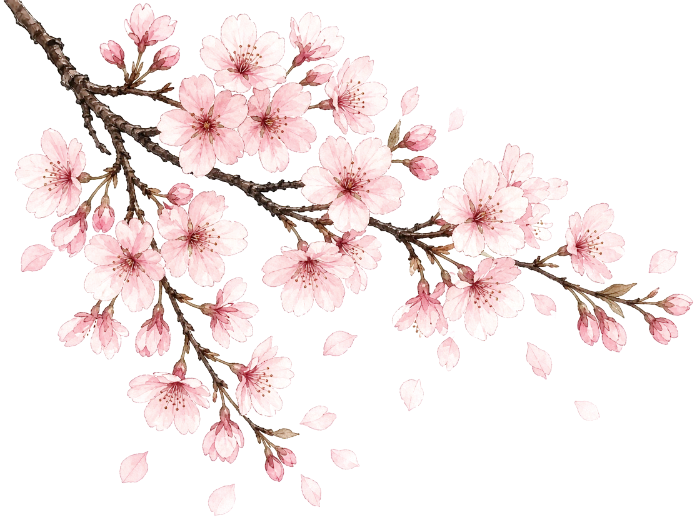

TRAVEL JOURNAL2026
— 06 —


the lake, very still

FIG. 01 — LAKESHORE
Woke before the sun. The mountain stayed out all day — no clouds at all.
· cold air, clear sky
· Fuji all morning
· the tower glowing at night
· Fuji all morning
· the tower glowing at night


me, very cold
— 07 —


Tokyo, after dark


FIG. 02 — THE TOWER AT NIGHT